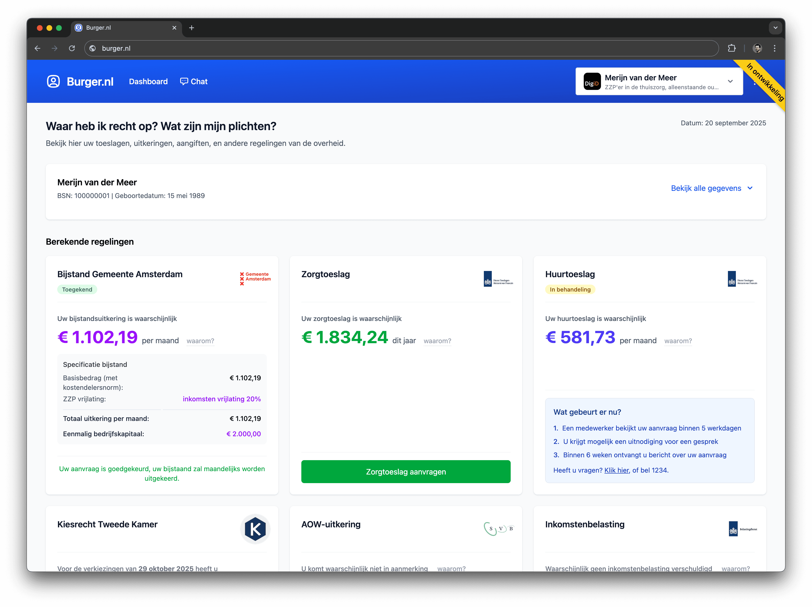
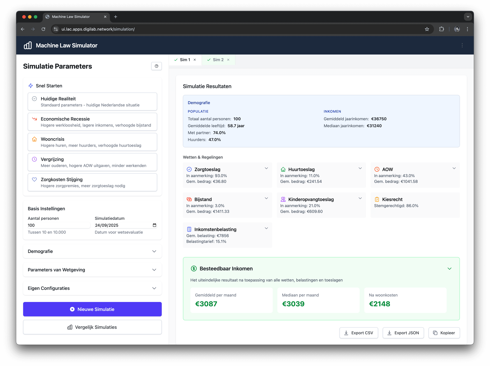

RegelRecht verkent hoe we transparante, eenduidige en consistente uitvoering van wetgeving kunnen realiseren. Een verkenning naar digitale mogelijkheden waarbij iedereen kan begrijpen hoe besluiten tot stand komen.
Een initiatief van
De uitvoering van wetgeving kent verschillende uitdagingen: verschillende interpretaties, ondoorzichtige systemen en complex programmeerwerk dat vaak ver af staat van de oorspronkelijke wet. RegelRecht verkent of machine-uitvoerbare wetgeving een antwoord kan bieden - wetten die direct als uitvoerbare code geschreven worden, zonder tussenkomst van programmeurs.
Kunnen we traditionele wetgeving transformeren naar machine-uitvoerbare specificaties? We onderzoeken of dit de kloof tussen wetgever en uitvoering kan verkleinen.
Wat als er één centrale, machine-uitvoerbare versie van elke wet bestaat die alle partijen gebruiken? We verkennen of dit interpretatie-verschillen kan verminderen.
Hoe maken we overheidsbesluiten inzichtelijker? We experimenteren met manieren waarop burgers kunnen zien welke regels gelden en hoe beslissingen tot stand komen.
De huidige manier waarop wetten worden toegepast kent verschillende uitdagingen in onze rechtsstaat. We onderzoeken of nieuwe technische benaderingen kunnen bijdragen aan oplossingen voor deze structurele vraagstukken.
Dezelfde wet wordt door verschillende overheidsorganisaties anders geïnterpreteerd en toegepast, wat leidt tot inconsistenties en onrecht.
Zouden machine-uitvoerbare wetten interpretatieproblemen kunnen verminderen? We onderzoeken of dit kan leiden tot consistentere regeltoepassing.
Burgers krijgen besluiten zonder uitleg over hoe deze tot stand zijn gekomen. Overheid als black box.
Kunnen we elk besluit traceerbaar maken naar de exacte regeltoepassing? We verkennen mogelijkheden voor meer transparantie in overheidsbeslissingen.
Wetten worden vaak geschreven zonder volledig te testen of ze in de praktijk uitvoerbaar zijn. Dit kan leiden tot implementatieproblemen door inconsistenties, onduidelijkheden of praktische beperkingen.
Zou machine-uitvoerbare wetgeving het mogelijk maken om wetten te testen? We onderzoeken of inconsistenties en conflicten vroegtijdig gedetecteerd kunnen worden.
Hoe zou de overgang van traditionele wetgeving naar een digitaal rechtsstelsel kunnen verlopen? We verkennen zeven mogelijke stappen en onderzoeken wat daardoor mogelijk zou kunnen worden:
Kunnen bestaande wetten systematisch worden omgezet van analoge tekst naar machine-uitvoerbare specificaties? Een eerste stap om een digitale basis te onderzoeken.
Zouden nieuwe wetten vanaf het begin machine-uitvoerbaar kunnen worden geschreven? We verkennen hoe dat eruit zou kunnen zien en hoe we daarin kunnen ondersteunen.
Een landelijke infrastructuur waar alle overheidssystemen dezelfde wettelijke definities gebruiken. Eén bron van waarheid voor regeltoepassing.
Het wordt mogelijk om systematisch te werken aan harmonisatie van bestaande wetgeving. Conflicten en inconsistenties tussen bestaande regelsets kunnen automatisch worden gedetecteerd, waardoor harmonisatie een bewuste keuze wordt.
Nieuwe wetten kunnen worden getest voordat ze ingaan. Het effect van nieuwe wetgeving op de consistentie van het rechtsstelsel kan tijdens het wetgevingsproces worden geanalyseerd.
Machine-uitvoerbare wetgeving wordt centraal gepubliceerd voor iedereen. Execution engines worden ook beschikbaar gesteld zodat alle partijen dezelfde wetten op identieke wijze kunnen uitvoeren.
Burgers en bedrijven kunnen de exacte werking van regels inzien en controleren. Volledige inzichtelijkheid in regeltoepassing.
Normalized Rule Model Language - een JSON-gebaseerd uitwisselings- en opslagformaat voor machine-uitvoerbare wetten. NRML maakt complexe juridische logica toegankelijk, ondersteunt meertalige regels, en heeft ingebouwde versioning. Als standaard uitwisselformaat kunnen verschillende tools en systemen dezelfde regelspecificaties gebruiken.
Meerdere execution engines die NRML code uitvoeren. Verschillende talen voor verschillende use cases - maar consistent juridisch resultaat.
LLM-gebaseerde tool om bestaand analoog recht om te zetten naar machine-uitvoerbare NRML. Automatische transformatie van traditionele wetgeving naar een digitaal rechtsstelsel.
Intuïtieve drag-and-drop interface voor juristen om wetten te schrijven zonder programmeerkennis. Van visuele logica naar executable code.
Visualiseert complexe relaties tussen verschillende wetten. Toont hoe wijzigingen in één wet doorwerken in het gehele juridische ecosysteem.
Volledige versioning van machine-uitvoerbare wetgeving. Track wijzigingen, rollback mogelijkheden, en branch verschillende wetsvoorstellen.
Test de gevolgen van nieuwe wetgeving voordat implementatie. Model maatschappelijke impact en voorspel onbedoelde effecten.
Centrale publicatie en distributie van machine-uitvoerbare wetgeving. API toegang voor alle overheidssystemen en private partijen.
Wat zouden de mogelijkheden van het RegelRecht ecosysteem in de praktijk kunnen zijn? We verkennen twee denkrichtingen voor transparante regeltoepassing en wetgevingstesting.

Wat als burgers op één plek al hun toeslagen, uitkeringen en verplichtingen zouden kunnen zien? Elke regel zou dan traceerbaar kunnen zijn terug naar de machine-uitvoerbare wetgeving, met volledige transparantie over hoe besluiten tot stand komen. Kunnen we dit realiseren?

Wat als beleidsmakers de gevolgen van nieuwe wetgeving zouden kunnen testen in een simulatie omgeving voordat deze wordt ingevoerd? Zou dit onbedoelde effecten kunnen voorkomen en de kwaliteit van wetgeving kunnen verbeteren?
RegelRecht draagt bij aan twee projecten uit het Innovatiebudget 2025 van de Digitale Overheid:
In samenwerking met VNG
Hoe kunnen we voorkomen dat de stapeling van wet- en regelgeving wetten onuitvoerbaar maakt? Dit project verkent de ontwikkeling van een analysetool om wetsvoorstellen te toetsen op uitvoerbaarheid in samenhang met andere wetten.
In samenwerking met Dienst Toeslagen
Kunnen we een algemeen rekenhart voor de overheid ontwikkelen? Dit project verkent hoe zo'n systeem zou kunnen helpen bij het uitvoeren van complexe regelingen voor burgers en bedrijven, bijvoorbeeld bij het berekenen van toeslagen.
Een overzicht van belangrijke rapporten, onderzoeken en bronnen die de noodzaak voor machine-uitvoerbare wetgeving onderbouwen.
Deze WRR-factsheet identificeert vijf aandachtspunten en toetsvragen voor parlementaire controle op digitale uitvoering van wetgeving. Het RegelRecht-project valt binnen het domein van deze factsheet en kan worden beoordeeld aan de hand van de voorgestelde criteria voor transparantie, traceerbaarheid en democratische controle van digitale wetsuitvoering.
PDF →Zuurmond signaleert dat de huidige informatiehuishouding een bureaucratische, reactieve overheid ondersteunt die te sterk gebaseerd is op wantrouwen jegens burgers. Hij pleit voor een responsieve overheid met betere informatievoorziening. RegelRecht-experimenten met machine-uitvoerbare wetgeving raken aan deze discussie over transparantie en directe toegankelijkheid van overheidsinformatie voor burgers.
Rapport →De Rekenkamer testte 9 algoritmes bij verschillende overheidsorganisaties en constateerde dat 6 daarvan risico's hadden op het gebied van prestatiebeheer, bias, datalekken of onbevoegde toegang. Het rapport benadrukt de noodzaak van continue monitoring en duidelijke afspraken over algoritme-inzet. RegelRecht-experimenten met wetten als direct uitvoerbare code raken aan deze problematiek van algoritmische transparantie en controleerbaarheid.
Rapport →Dit eerste systematische onderzoek naar algoritmegebruik bij de Nederlandse overheid constateerde dat algoritmes zich vooral richten op overheidsbehoeften, met beperkte aandacht voor ethische aspecten en burgerinzicht. De Rekenkamer ontwikkelde een beoordelingskader voor algoritmes. RegelRecht-experimenten zijn relevant voor deze discussie omdat ze zich richten op transparantie en controleerbaarheid van geautomatiseerde regeltoepassing.
Rapport →De Raad van State benadrukt het belang van uitvoeringstoetsen en samenwerking tussen beleidsmakers, wetgevingsjuristen en uitvoeringsorganisaties in multidisciplinaire teams. Ook wordt gepleit voor betere toetsing van nieuwe wetgeving op uitvoerbaarheid en 'doenvermogen' voor burgers en organisaties. RegelRecht-experimenten met machine-uitvoerbare wetgeving kunnen worden gezien als een technische benadering van deze uitvoeringstoetsing.
Aanbevelingen →De staatscommissie signaleert dat demografische ontwikkelingen leiden tot druk op toegankelijkheid van overheidsdiensten zoals onderwijs, zorg en huisvesting. Ook wordt gewezen op maatschappelijke onvrede over arbeidsmigratie met privé-winst en publieke kosten. RegelRecht-experimenten met transparante, simuleerbare wetgeving raken aan de bredere discussie over toegankelijke overheidsdienstverlening en het verminderen van onduidelijkheid voor burgers.
Rapport →De studiegroep concludeert dat digitalisering van de overheid een radicale mentaliteitsverandering vereist. Overheidsorganisaties moeten ICT in de kern van hun primaire processen begrijpen en aansturen. Het rapport benadrukt dat digitale dienstverlening hoort tot de kern van het primaire proces en proactief georganiseerd moet worden. RegelRecht-experimenten met machine-uitvoerbare wetgeving sluiten aan bij deze visie van digitalisering als kernproces in plaats van efficiency-hulpmiddel.
Rapport →Dit rapport analyseert problemen bij uitvoeringsorganisaties zoals de Belastingdienst, DUO en UWV: continuïteitsrisico's, beperkte wendbaarheid bij beleidswijzigingen, en ontbrekende mogelijkheden voor maatwerk. Het pleit voor verbetering van de digitale uitvoering. RegelRecht-experimenten met gestandaardiseerde, machine-uitvoerbare regelspecificaties vormen een technische benadering van de gesignaleerde uitdagingen rond uniformiteit en wendbaarheid.
Rapport →Dit actieplan werd opgesteld als reactie op het rapport 'Ongekend onrecht' en richt zich op structurele verbetering van de informatiehuishouding binnen de gehele rijksoverheid. Het streeft naar een meer open en responsieve overheid met betere informatievoorziening aan burgers. RegelRecht-experimenten met publiek toegankelijke, machine-uitvoerbare wetgeving kunnen worden gepositioneerd binnen deze bredere beweging naar transparantere overheidsinformatie.
PDF →Een digitaal rechtsstelsel zou kunnen betekenen dat juridische regels worden geschreven als uitvoerbare code die computers direct zouden kunnen draaien en toepassen, zonder tussenkomst van menselijke interpretatie of programmeurs. Maar is dit realiseerbaar? En hoe verhoudt dit zich tot traditioneel analoog recht?
NRML onderscheidt zich door een ontwikkelaarsvriendelijke JSON-benadering in plaats van complexe XML-standaarden. Het dient als standaard uitwisselings- en opslagformaat zodat verschillende overheidssystemen dezelfde regelspecificaties kunnen gebruiken. NRML heeft ingebouwde test-scenarios en versioning, waardoor het toegankelijk is voor zowel juristen als ontwikkelaars.
Zou RegelRecht bestaande implementaties kunnen valideren en kunnen dienen als referentie voor nieuwe systemen? Het zou bestaande systemen niet direct vervangen, maar zou controle en modernisering mogelijk kunnen maken.
RegelRecht zou een technisch hulpmiddel kunnen zijn. De juridische geldigheid zou bij de oorspronkelijke wetgeving blijven. Maar zou het kunnen helpen bij consistente interpretatie en toepassing?
Door regels expliciet te maken in code kunnen burgers en organisaties exact zien hoe beslissingen tot stand komen, in plaats van te vertrouwen op ondoorzichtige systemen.
Deze verkenning van machine-uitvoerbare wetgeving roept veel vragen op. Hoe zie jij de toekomst van de digitale overheid? Wat zijn je zorgen en verwachtingen bij deze ontwikkelingen?
We nodigen je uit om mee te denken over de mogelijkheden en uitdagingen van RegelRecht. Jouw input helpt ons deze verkenning verder te vormgeven.